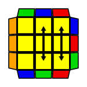
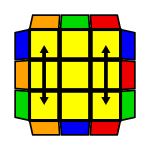
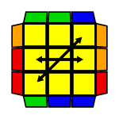
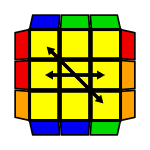

PLL algorithms
- Algorithms
- F-perm: R' U' F' (R U R' U') R' F (R2 U' R' U') (R U R' U) R
- E-perm: x' (L' U L) D' (L' U' L) D (L' U' L) D' (L' U L) D
- Na-perm:
- Nb-perm: R' (U R U' R') F' U' F (R U R') (F R' F' R) U' R
x' means look onto the yellow face
x means look onto the white face
The moves in ( ) mean that you can use fingertricks to be faster at doing this algorithm without doing lots of regriping